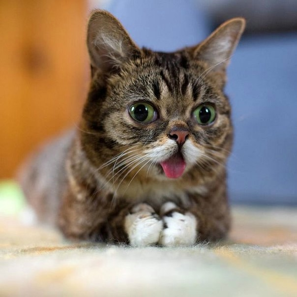

|

За даними Ліонського університету в світі близько 400 мільйонів домашніх котів. Пальму першості віддають Австралії, де на 10 жителів доводиться 9 котів. Щороку американці витрачають чотири мільярди доларів на їжу для котів. Це на один мільярд доларів більше, ніж вони витрачають на їжу для грудних дітей! Котам, щоб бачити, вистачає 1/6 світла, необхідного людині. Чутливість кішки до гучності звуку в 3 рази вища, ніж у людини! |